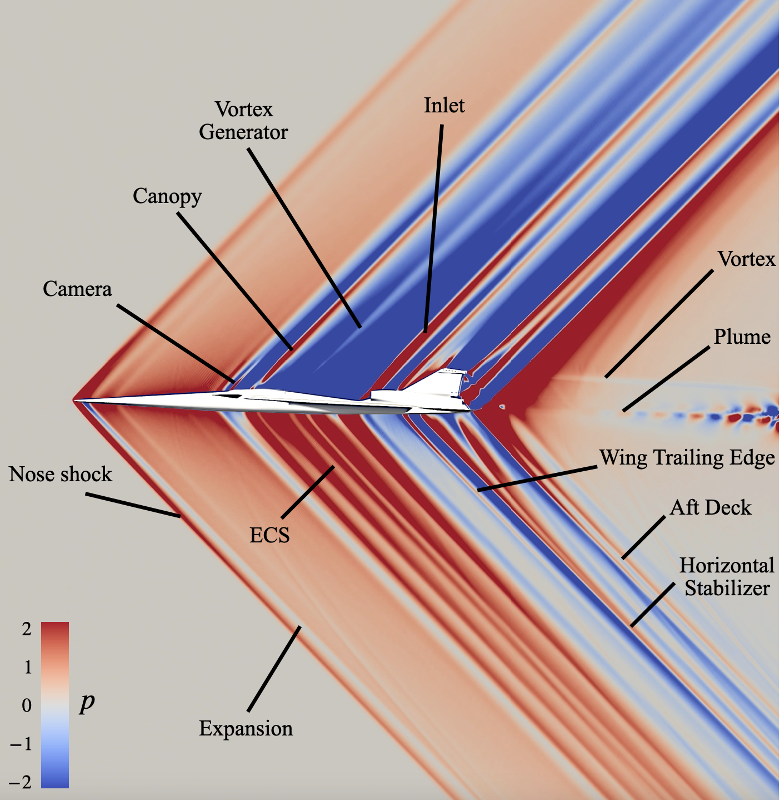
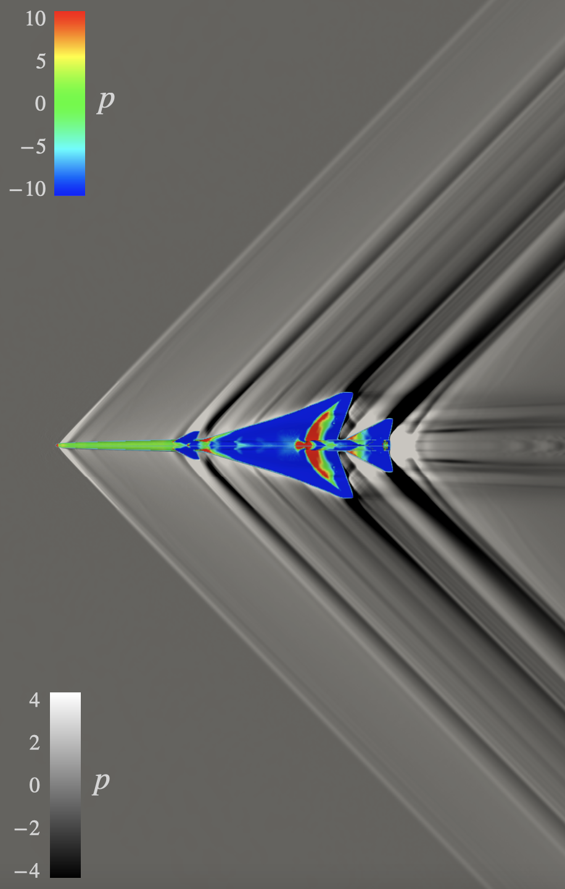

I am a computational scientist passionate about developing numerical algorithms for mathematical modeling of physical systems and engineering applications. I am currently a Department of Energy Computational Science Graduate Fellow at the Massachusetts Institute of Technology.
My research broadly focuses on higher-order numerical method development for approximating deterministic, stochastic, and chaotic differential equations.
I'm also interested in using information theory and machine learning for physics-based, data-driven, and reduced-order modeling.
My doctoral research with Dave Darmofal in the Aerospace Computational Science and Engineering Laboratory aims to incorporate stochastic modeling to improve the time integration schemes for chaotic systems. Further, we want to explore the potential stabilizing effect that stochastic models could have on linearized sensitivity of chaotic systems. My ultimate goal is to combine stochastic differential equations, variational multiscale discretizations, and subgrid-scale modeling to develop better stabilized models for chaotic dynamical systems.
I earned my master's degree in Aeronautics and Astronautics with a specialization in Aerospace Computational Engineering from MIT in June 2023. I completed my master's thesis on assessing wall-modeled large-eddy simulation for high-speed flows and exploring new modeling strategies in the Computational Turbulence Group advised by Adrian Lozano-Duran. The numerical visualizations below show the pressure gradient contours and surface pressure percentages on the supersonic aircraft, the Lockheed Martin X-59 QueSST, which was a main focus of my thesis.
I completed my undergraduate degree in Aerospace Engineering with a minor in Atmospheric Sciences and a concentration in Computational Science and Engineering from the University of Illinois Urbana-Champaign in May 2021. My undergraduate research included investigating higher-order immersed boundary methods for fluid-structure interaction problems with Andres Goza in the Numerics and Unsteady Flows Group. I also assessed traditional and novel computational methods for computing chemical reaction rates for hypersonic vehicles in the Center for Hypersonics & Entry Systems Studies directed by Marco Panesi.
Outside of research, I enjoy teaching and mentoring. I have been recognized for my teaching and leadership at UIUC many times, including by my former students from classes I've developed and instructed. I have been consistently recognized by MIT AeroAstro for my involvement and leadership in advocacy efforts.
In my free time, I like karaoke, running, rock climbing, and hanging out with my siblings.
email | cv | google scholar | linkedin | research gate
My doctoral research with Dave Darmofal in the Aerospace Computational Science and Engineering Laboratory aims to incorporate stochastic modeling to improve the time integration schemes for chaotic systems. Further, we want to explore the potential stabilizing effect that stochastic models could have on linearized sensitivity of chaotic systems. My ultimate goal is to combine stochastic differential equations, variational multiscale discretizations, and subgrid-scale modeling to develop better stabilized models for chaotic dynamical systems.
I earned my master's degree in Aeronautics and Astronautics with a specialization in Aerospace Computational Engineering from MIT in June 2023. I completed my master's thesis on assessing wall-modeled large-eddy simulation for high-speed flows and exploring new modeling strategies in the Computational Turbulence Group advised by Adrian Lozano-Duran. The numerical visualizations below show the pressure gradient contours and surface pressure percentages on the supersonic aircraft, the Lockheed Martin X-59 QueSST, which was a main focus of my thesis.
I completed my undergraduate degree in Aerospace Engineering with a minor in Atmospheric Sciences and a concentration in Computational Science and Engineering from the University of Illinois Urbana-Champaign in May 2021. My undergraduate research included investigating higher-order immersed boundary methods for fluid-structure interaction problems with Andres Goza in the Numerics and Unsteady Flows Group. I also assessed traditional and novel computational methods for computing chemical reaction rates for hypersonic vehicles in the Center for Hypersonics & Entry Systems Studies directed by Marco Panesi.
Outside of research, I enjoy teaching and mentoring. I have been recognized for my teaching and leadership at UIUC many times, including by my former students from classes I've developed and instructed. I have been consistently recognized by MIT AeroAstro for my involvement and leadership in advocacy efforts.
In my free time, I like karaoke, running, rock climbing, and hanging out with my siblings.
email | cv | google scholar | linkedin | research gate

